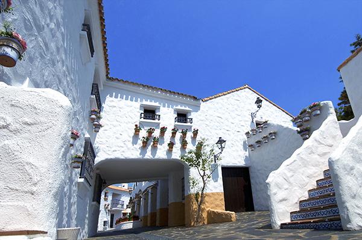
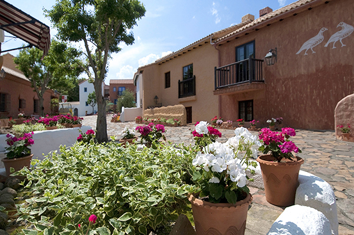
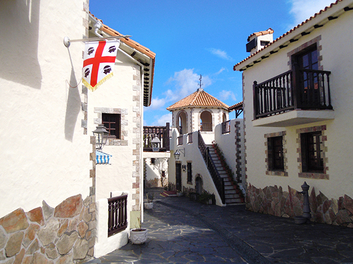

「志摩地中海村」は、2016年5月に開かれた伊勢志摩サミットの会場「賢島」を臨む、伊勢志摩半島にあるリゾート施設。英虞（あご）湾の豊かな自然に囲まれた広大な敷地は、なんと約10,000坪もあります。おしゃれな建物や街並みの設計は、すべて本場スペインの設計士によるもの。細部にまでこだわったデザインに、リアルな地中海の雰囲気を感じることができるんです！
アンダルシアの街並みは、スペインの南部ロンダやカサレスの街の建築様式を参考にデザインされています。 明るく華やかな雰囲気は、まさに情熱の国スペインです。
サルジニアは地中海に浮かぶイタリアの島。ビーチの美しさで世界中のセレブたちを魅了する、人気のリゾート地です。 この街の建物は、屋内・屋外ともに、土壁が自由な曲線を描いているのが特徴。潮風が香る海辺の街並みが表現されています。
カスティーリャは、スペインの首都マドリードの南側、スペインの中央部に位置し、澄んだ風が爽快に吹き抜ける広大な高原地帯です。カスティーリャの街は、トレドやラマンチャ地方の建築様式で表現され、素朴な石積みの窓や外壁が特徴。山岳地帯をイメージさせる落ち着いた趣のある街並みです。
志摩地中海村のホームページ>>>